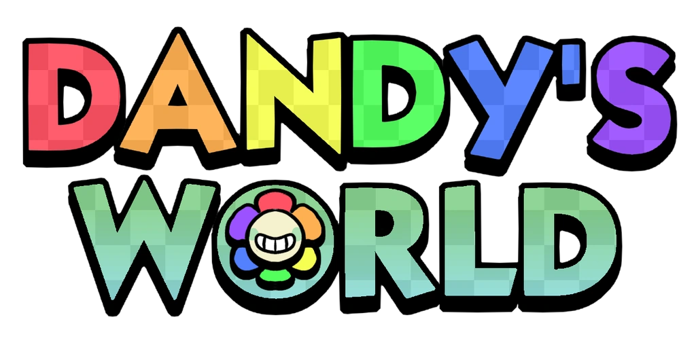

Гра створена 26 січня 2024 року.
Цій грі рік, небагато, правда?☻
Dandy's world часто оновлюється тобто Qwelver
(власниця гри, працює з BlushCrunch Studios) не покинула гру і її розробка іде далі.
3.2 міліарда разів зайшли в цю гру.
Багато правда?☺
Спершу скажу суть гри:
Ти маєш проходити по поверхах, щоб це зробити тобі потрібно заповнювати машини в яких заходиться ichor(чорна рідина, токож є валютою гри) та уникати Twisteds або Твістедів(злих сутностей в грі).
Щоб це було легше робити потрібно збирати кращих Toons або їх можна називати Тунами (ігрові персонажі), їх потрібно купляти за ichor та для деяких потрібні інші потреби.
Одним словом хочу сказати, Вам гра сподобається
Звісно в цій грі є донат по типу ігрової валюти або скіни, але не має відроджень, топто не донатерам і донатерам можна спокійно грати разом
Ця гра є БЕЗКОШТОВНА та вона є в на платформі Roblox(він також безкоштовний)
Сам лоббі вміщає багато людей, але в ліфті(це телепорт до самої гри) може бути до 8 людей
Як багато хто знає в Роблоксі є приватні сервери, але, нажаль, більшість з них платні.
Але в Дендіс Ворлд він є безкоштовним і ви можете грати з друзями спокійно не боючись що до вас хтось зайде